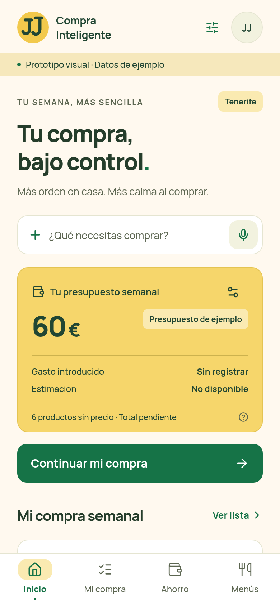
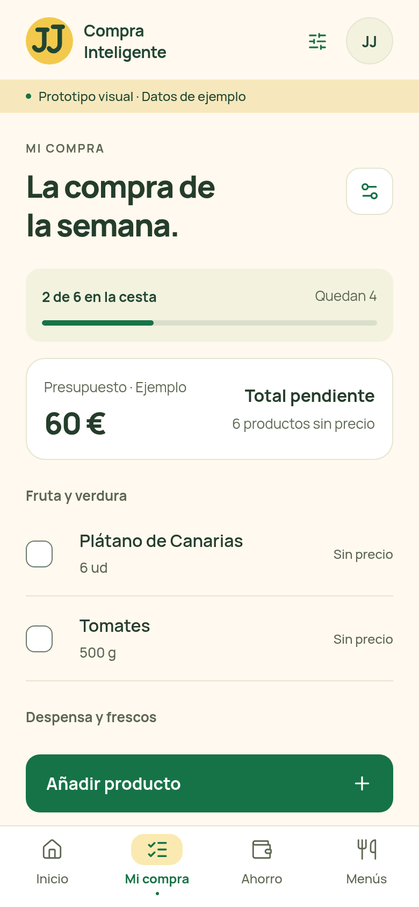
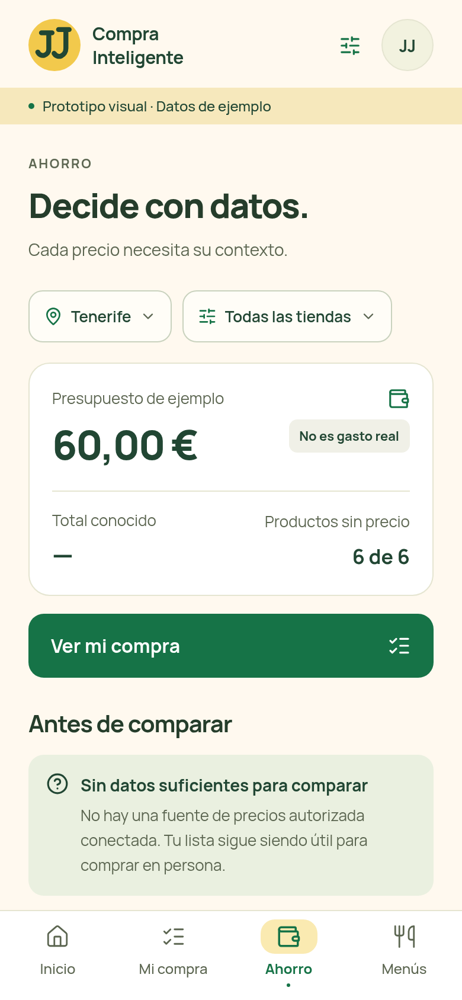

JJ Compra
JJ CompraInteligente
B02 / PANTALLAS Y EXPERIENCIA
Verde Mercado · M3 provisional
Una compra más clara,
de principio a fin.
Cinco vistas con una misma dirección visual. Capturas de maquetas web ejecutables a 390×844 px CSS; son propuestas para revisar, no una app iOS validada ni funciones finales.
P01
Inicio
La acción principal conduce a la lista. El presupuesto se distingue del gasto.

P02
Mi compra
Cantidades y unidades visibles, progreso y acción de añadir al alcance.

P03
Ahorro
La ausencia de fuentes no se disfraza de ahorro. La lista sigue siendo útil.
